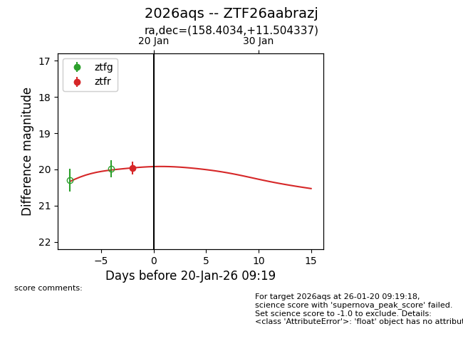
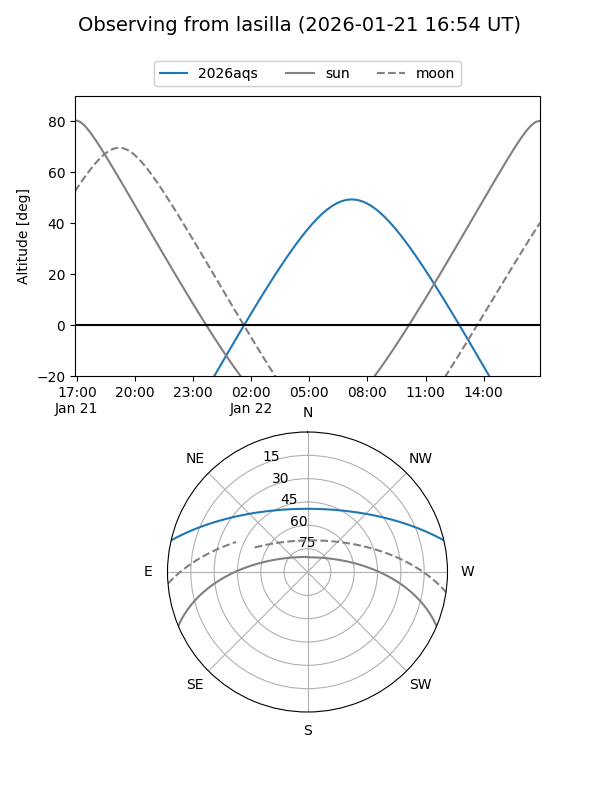
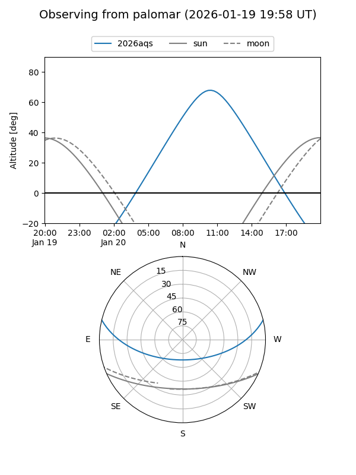
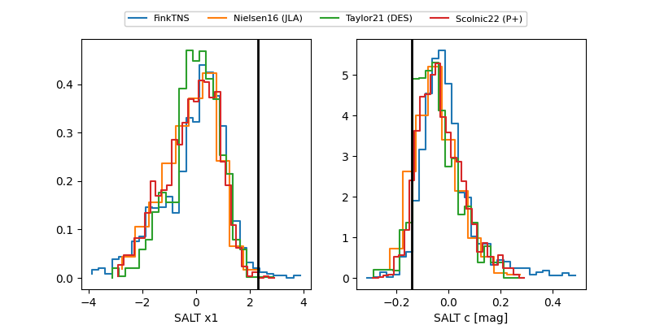

2026aqs
Target 2026aqs at 2026-01-22 09:26
Aliases and brokers:
FINK: link
Lasair: link
ALeRCE: link
TNS: link
YSE: link
alt names
ZTF26aabrazj (ztf,fink_ztf)
2026aqs (tns,yse)
Coordinates:
equatorial (ra, dec) = 158.4034,+11.50434
equatorial (HMS+DMS) = 10:33:36.81,+11:30:15.61
galactic (l, b) = (231.9350,+54.10059)
Flags:
Photometry:
last ztfg=19.70, ztfr=19.93
1 ztfg, 2 ztfr detections
Lightcurve

Visibility


Additional plots
